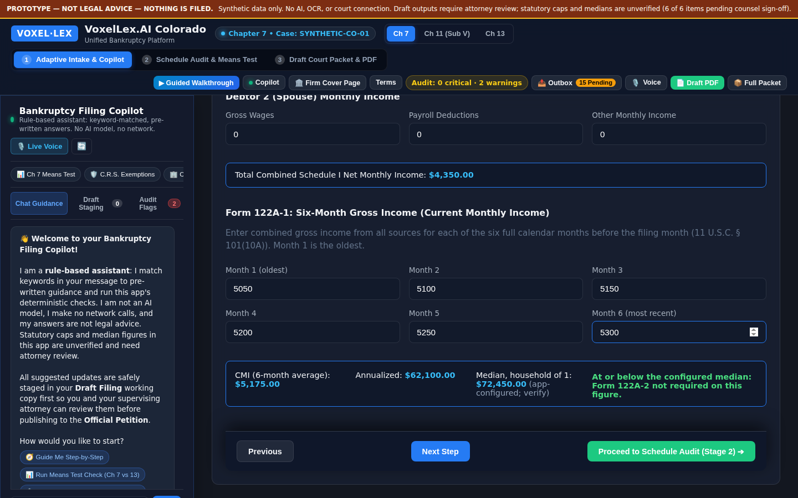
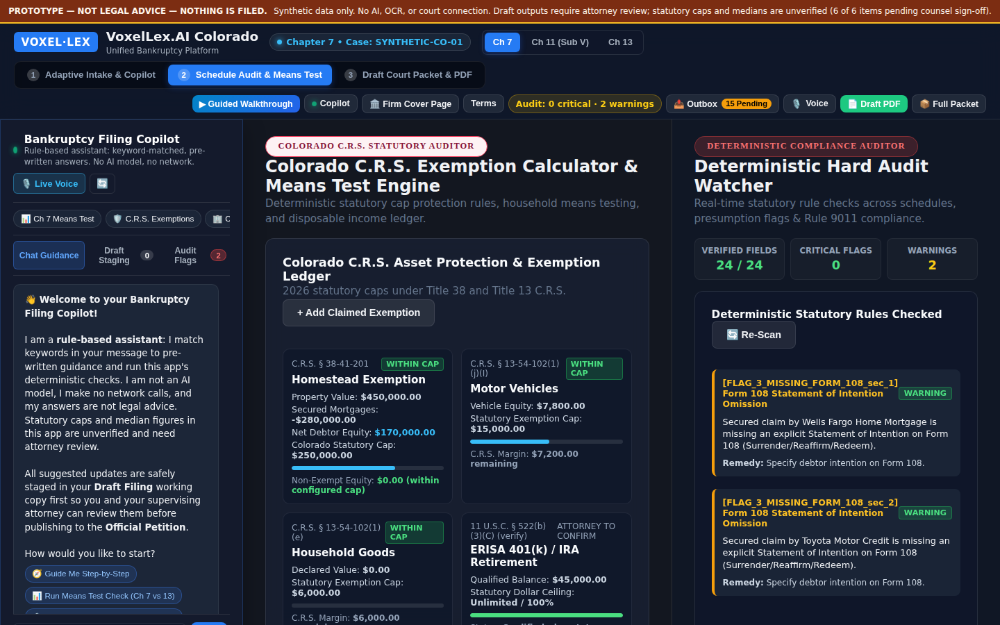
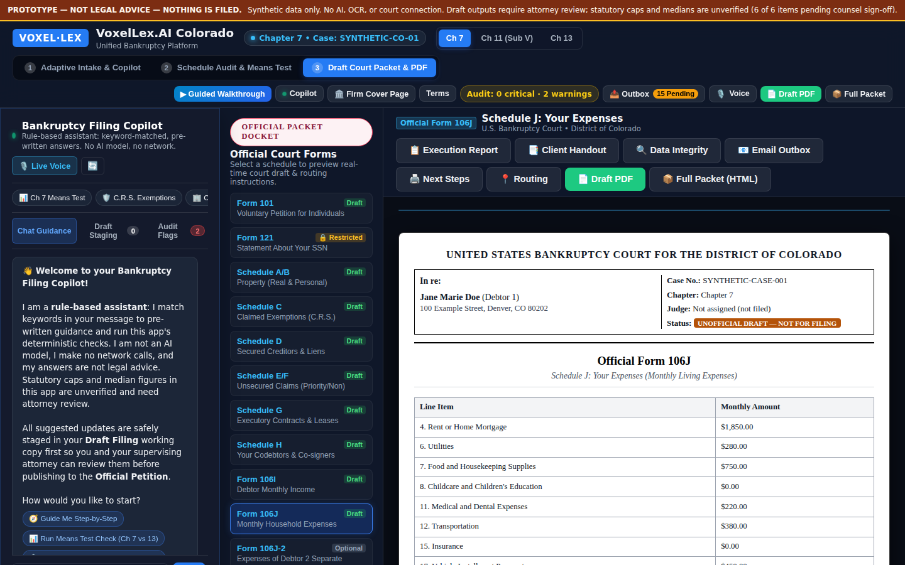

Chapter 7 petitions, prepared by your paralegals, reviewed by your attorney.
One intake that fills every schedule, Colorado exemption and means-test checks that show their math, and an attorney review gate that records who approved what. Built for firms, licensed only to firms.
What it does
The work between the client consultation and the attorney's signature, in one place.
Enter it once
A 16-step intake feeds Form 101, Schedules A/B through J-2, and Form 122A-1 from a single case record, so the same number never has to be typed twice.
Checks that show their work
Colorado exemption caps, six-month current monthly income, and cross-schedule consistency are calculated by rule, with the inputs and thresholds on screen.
A documented attorney gate
Hard-audit flags block sign-off. The supervising attorney's review is recorded with their signed-in identity before anything is marked ready.
Inside the app
Screens from the current build, with synthetic case data.



How a case moves
The software prepares; your attorney decides and files.
Paralegal intake
Staff enter debtor, property, creditor, income and expense details once. Totals and schedules fill in as they go.
Checks and review
The app flags exemption overages, missing statements and inconsistencies. The attorney reviews the drafts and signs off in the app.
Attorney files
Your attorney files through the court's own CM/ECF system, as today. The app never files or contacts the court.
Access and security
The app is not on the public internet. Each firm's staff sign in through Cloudflare Access with their own work accounts before the app will load.
Firm-only sign-in
Access is limited per firm, by work email or your existing Microsoft 365 or Google Workspace login. Removing a firm's access takes one change.
Verified identity on sign-off
The app checks the sign-in on every request and records the verified email with each attorney sign-off and terms acceptance.
No AI, no third parties
Calculations are rule-based. Case data stays in the browser session and is not sent to AI services or other outside providers.
Where the product is today
We would rather you hear this from us than find it in a demo.
- Chapter 7 is the supported workflow. Chapters 11 and 13 are not yet available.
- Forms 107 (SOFA), 108 and 122A-2 are not built yet.
- Downloads are drafts for attorney review. Filling the official court PDFs directly is in progress.
- There is no document scanning (OCR); figures are entered by staff.
- Colorado exemption amounts and median-income figures are being confirmed by Colorado counsel before release.
- Case data is not yet saved between sessions; persistent, encrypted storage comes before any real client use.
See it with your own workflow
A 30-minute walkthrough with synthetic data, for your paralegals and supervising attorney.
Request a demo